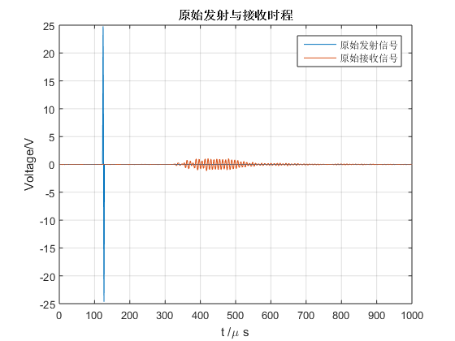
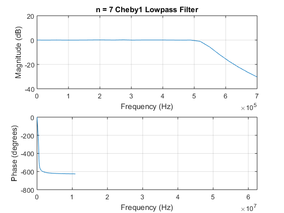
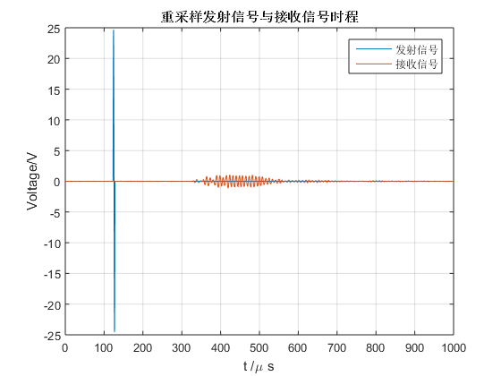
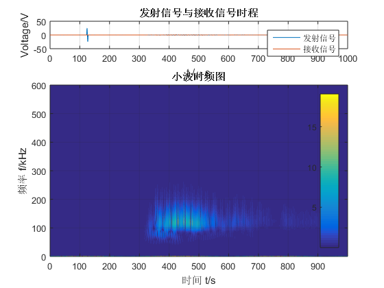

Contents
数据导入
clc,clear
close all
[M,dt] = tools.getcsv();
fs = 1/dt;
t = M(:,1);
t = t - t(1);
inp = M(:,2);
out = M(:,3);
inp = tools.clean(inp,0.015);
out = tools.clean(out);
figure
plot([t,t]*1e6,[inp,out])
tools.xyt({'t /\mu s','Voltage/V','原始发射与接收时程'})
legend({'原始发射信号','原始接收信号'})

参数对话框设置
prompt0 = {
'低通滤波：带通频率 kHz', 500
'低通滤波：带阻频率 kHz', 700
'当前采样频率 fs0 kHz', fs/1e3
'降低采样倍数 q', 10
'小波类型','Morl'
'尺度序列的长度totalscal',2048
'频率显示范围 kHz',[0 600]
};
dlg0.title = '时频分析参数设置';
dlg0.save = 's17';
para = tools.paradlg(prompt0,dlg0);
para_lp.f1 = para{1}*1e3;
para_lp.f3 = para{2}*1e3;
para_lp.rp = 0.1;
para_lp.rs = 30;
para_lp.fs = fs;
para_lp.type = 1;
p = 1;
q = para{4};
wavename = para{5};
totalscal = para{6};
fzk_lim = para{7};
cheby1低通滤波
out = tools.lowp(out,para_lp);

信号重采样
inp2 = resample(inp,p,q);
out2 = resample(out,p,q);
t2 = (0:length(out2)-1)*dt*q/p;
t2 = t2';
fs2 = fs/q;
figure
plot([t2,t2]*1e6,[inp2,out2])
tools.xyt({'t /\mu s','Voltage/V','重采样发射信号与接收信号时程'})
legend({'发射信号','接收信号'})

小波变换参数设置
wcf = centfrq(wavename);
cparam = 2*wcf*totalscal;
a = totalscal:-1:0.2;
scal = cparam./a;
tic
coefs=cwt(out2,scal,wavename);
f=scal2frq(scal,wavename,1/fs2);
fk = f/1e3;
toc
Elapsed time is 4.085185 seconds.
绘图设置
figure
subplot(4,1,1)
plot([t2,t2]*1e6,[inp2,out2])
tools.xyt({'t /\mu s','Voltage/V','发射信号与接收信号时程'})
legend({'发射信号','接收信号'})
subplot(4,1,[2 3 4])
imagesc(t2*1e6,fk,abs(coefs));
colorbar('east');
tools.xyt({'时间 t/s','频率 f/kHz','小波时频图'})
ylim(fzk_lim)
set(gca, 'YDir', 'normal')
tools.white;
